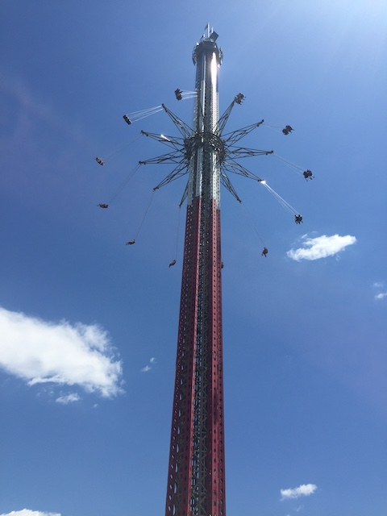

Six Flags New England is definetly one of the more interesting Six Flags Parks. It's easily one of the better Six Flags parks, and that's not only because it has two high quality best in the country coasters in the park. No, this is more about the balance that the park has. Yeah, this park is REALLY well balanced. Yes, Superman and Wicked Cyclone are some of the best coasters in the world, but all the other coasters are really fun. Ok, they're not all amazing, but there's not a single bad one in the bunch. I mean, a B&M Floorless Coaster, and an S&S Freespin has to count for something. And even amongst that, everything else is really balanced. Their flat ride collection is really good, with some really rare and unique rides, as well as something for everyone. They even have a really cool water park for you to cool off and enjoy in. Yeah. It's not only one of the biggest parks in the New England region, but it's one of the best parks in the Six Flags Chain. Highly recommended you stop on by while you're in New England.
Here are the reviews of all the Flat Rides at Six Flags New England. This park, unlike many of it's brothers and sisters in the Six Flags chain, actually has a decent flat ride collection. Let's move onto the star flat ride, and one that really stands out. Sky Screamer, which is the parks 400 ft. Starflyer. Now this isn't completely original, however, for locals, this'll surely freak them out since....you're being held 400 ft up in the air by tiny little playground chains. Now this doesn't scare me for the same reason I'm not afraid of the rides on the Stratosphere Tower or the Plane on a Stick ride at Tibidabo/. I have NO fear of heights. I mean, I jump off 70 ft cliffs for fun. So....yeah. Heights aren't a big deal for me. But if you are afraid of them, then this ride is pretty much torture for you. But even so, it's still fun just being up that high. I know my friends and I pretty much made asses of ourselves waving hello to Conneticuit the entire time (the park is right on the state line). They also added a Giant Frisbee as well. I may not have ridden it, but I've ridden countless clones of it, including one at my home park, and they are a ton of fun. So I'm still happy that it's here. And then we have a particuarly unique flat ride for us Americans (Europeans, feel free to roll your eyes at us). The Great Houdini. This is a Vekoma Mad House. Now if you live in Europe or have visited a lot of parks in Europe, you'll quickly find out that these rides are EVERYWHERE in the European Region. However, there are only 2 in the United States, one of which is here at Six Flags New England. Now if you constantly ride these rides, they definetly grow old. However, for someone riding a Mad House for the first time, these rides are amazing. I know I LOVED them until I rode them constantly when I was in Europe. Now back during my first visit, they also had an S&S Swat, which was a fun ride, but sadly they got rid of it due to technical problems, which I'm not surprised by at all. Most people didn't even like it, but I did. Oh well, there's now only one left in the world at Thorpe Park. So go to England if you want to ride its one and only clone. Then there's Cyborg. This ride really isn't anything special. However, the theming makes the ride a lot more fun, which is impressive by Six Flags standards. They also have one of those Magic Carpet rides, which I have to admit, are AWESOME!!! These rides are seriously underrated. Why don't more people talk about them!!? Their wipeout however, is one of the weakest ones out there. Seriously, that ride sucked. The park also has an S&S Combo Tower, a frisbee, a top spin, some chairswings, a scrambler, some teacups, and a carousel.

This ride is especially for anyone afraid of heights. >=)
Definetly ride this ride if you haven't been to the European Parks.
Water Rides
I never rode any of the water rides at Six Flags New England. However, they do have some good ones here. They one of those spinning raft rides here, which are fun and all, but not worth the HORRENDOUS waits that they get (or at least the one here. Seriously, this thing was a 2 hour wait due to HORRIBLE capacity). They also have a river rapids ride and a shoot the chutes ride here. Both of which are fun, but neither of which are special. So ride if those sound interseting to you.
Water Park
(Six Flags Hurricane Harbor)
Here is the review of Six Flags Hurricane Harbor. The included water park to Six Flags New England. Now I didn't spend too much time here as I mostly just explored the place for a little bit during the Water Park ERT. However, it did seem like a very nice water park with a couple really good slides that I thouroughly enjoyed.
The Major Waterslides
There is a link to a review of all the Major Waterslides at Six Flags Hurricane Harbor.
Ok, so the food here is nothing special. The food didn't wow me at all. Ok, to be fair. Six Flags New England did impress me in their food department in one way. They sold Vault on tap. YES!!! I LOVE VAULT!!! Sadly however, Coke discontinued Vault (YOU SUCK!!!). So there goes the one special thing I liked about the food department at Six Flags New England.
*Sniff* I miss you Vault.
Theming and Other Attractions
Here are the reviews of all the other stuff at Six Flags New England. There' really not much theming considering that it's a Six Flags park and all, though I will admit that the park does have a nice setting right by the Conneticuit River. But aside from a couple statues of D.C Comics characters in the Superhero themed area, there's no theming at Six Flags New England. As for other stuff to do at the park, there's really not that much. I'm sure there's a couple shows or something like that. But keep in mind, this is a Six Flags park. They're not exactly known for stuff that isn't roller coasters.
In Conclusion
Six Flags New England is a really nice park and definetly one of the best parks in the Six Flags Chain. Not only are they home to some of the best coasters on the planet such as Superman and Wicked Cyclone, but they also have some really good flat rides as well as a nice water park for you to check out and cool off at. This combinded with another Top 10 Coaster nearby at Lake Compounce really makes the Northeast a hot spot for anyone wanting to ride top quality roller costers.
Enthusiast FAQs.
*Are there kiddy coaster restrictions? - No and No. There are no restrictions for Catwoman's Whip or the Great Chase.
Tips
*Get a Gold Q Bot if it's summer. It'll most likely be worth it.
*Get on the kiddy coasters in the morning since they aren't on the Qbot
*If you don't get a Qbot, run to Wicked Cyclone first and then get the credits mentioned above.
*Get multiple rides on Superman and Wicked Cyclone
*Be sure to ride Superman at night after it warms up.
Considering how my Six Flags New England video is blocked in so many countries, including freaking America, the video is also posted on Vimeo so you can watch it there if it's blocked in your home country.